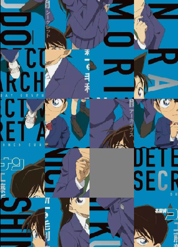

The pieces are randomly shuffled to make a new game. Q: Is every random configuration solvable?

I recently found the necessary and sufficient condition and its proof. Below I described this journey...
TL;DR: Moving a piece in the puzzle using the gray piece is called a transposition in Algebra and every rearrangment of
the pieces is called a permutation. There's a theorem which states that every permutation is decomposable into a product of transpositions.
The solvability question above is really a restricted case of that theorem, asking whether every permutation is decomposable into product of
transpositions involving a particular element. The answer is that it is decomposable iff permutation oddness matches the "oddness" of that element.
I first coded this puzzle in high school and after playing many games my aunt told me some configurations were not solvable!
At that time I couldn't figure out why some configurations were solvable and some were not, so I re-wrote the random process
so that it involved thousands of actual moves, ie. just swapping pieces that are next to the gray piece. You can imagine
how ugly the code is..
What I knew: about half of the configurations were solvable
In university I first came across the notion that permutations have parity too, ie. some are odd some are even.
A (randomly-generated) configuration is called a permutation in Algebra. So I thought this is probably the underlying
cause, the probability fits too (around half configurations are solvable; exactly half of permutations are even).
But I didn't really sit down to investigate further..Now after many years, for educational purposes I rewrote this puzzle.
The big question still haunted me. So I must find out why this time...
My first guess was: a random configuration is solvable when the initial permutation is even.
It's very simple but wrong... counter-example: consider a solved puzzle, if you slide the gray piece once, its odd but still solvable..
So I listed out all the possible configurations of the 2x2 case and many configurations of 2x3, and came up with the correct condition:
Proposition: A configuration is solvable iff its initial permutation oddness = oddness of gray piece initial position
In my settings, the gray piece falls to the bottom-right corner, so that position is called 'even'. Colour the grid as a chessboard
and call the cells with same colour as bottom right corner even. The other positions I shall call them odd. Before we go to the proof
you should realize the following "obvious" insight:
key insight part 1: Suppose we have an n x m puzzle. Except for the bottom-right 2x2 cells, we can ALWAYS rearranged
the pieces to their correct positions (possibly using some of the 2x2 cells of course).
Key insight part 2: Without changing all the other pieces, we can ALWAYS rearranged the bottom-right 2x2 cells
so that gray piece is at bottom-right, with the piece on the left of gray piece also correctly positioned. In such penultimate situation,
the puzzle is solved iff the "top" 2 pieces in the bottom-right 2x2 are in correct positions!
Proof of proposition
First we prove: IF permutation oddness = oddness of gray piece position, then it's solvable
Suppose we are given a randomly generated puzzle. Step 1: move the gray piece to bottom right, say we used N1 steps.
Step 2: do the key insight (both parts) above, say we used N2 steps. Note N2 is always even bc no change in gray piece position. We have 2 cases:
Assume initial permutation is odd and gray piece initial position is odd. Since gray piece position is odd, N1 must be odd and after steps 1 & 2, we have
moved (N1+N2=) odd number of steps, ie. permutation is now even. Recall we are in the penultimate situation after step 2. Since permutation is
even, the "top" 2 pieces in 2x2 must be in correct positions, otherwise the permutation is odd, a contradiction. Hence the puzzle is solved.
Assume now initial permutation is even and gray piece initial position is even. Since gray piece position is even, N1 must be even and after steps 1 & 2,
we have moved even number of steps, ie. permutation is even and the puzzle is solved.
Next we prove: IF it is solvable, then permutation oddness = oddness of gray piece position
Suppose we are given a randomly generated puzzle. Let A = initial configuration oddness and B = oddness of gray piece initial position.
Then we apply step 1 using N1 steps and apply step 2 using N2 steps. By similar reasonings as above, oddness of N1 = B and N2 is even.
Since the puzzle is solvable, after step 2, the top 2 pieces in 2x2 are in correct positions, meaning configuration is now even.
So A + N1 + N2 = even. Since N2 is even, oddess of A = oddness of N1 = oddness of B.
Now after writing up the proof, I realized the key is the invariant quantity "permutation oddness - oddness of gray piece" and also
that it requires much more explanations of mathematical concepts in order to explain to general public.. So if you don't understand some of the
arguments above, probably bc I haven't provided enough mathematical background..